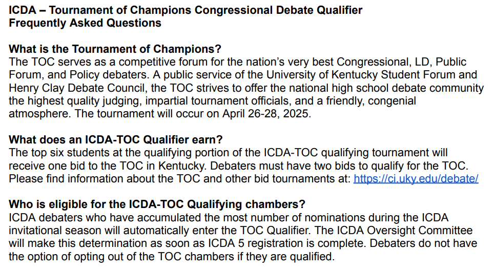
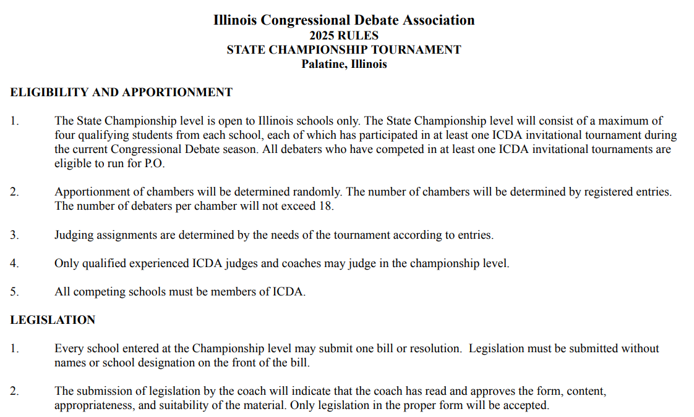

To keep debate fair and efficient, and to facilitate order in tournaments, ICDA has multiple sets of rules applicable to either all tournaments or to championship-level competitions (i.e. TOC). While debaters are reminded to follow every part of these rules, a select few especially important and/or commonly misunderstood are described below.
Important Rules
Junior varsity transitioning (Rule 9)
Debaters new to the current season can be moved between JV and Varsity can be moved back and forth at the discretion of their coach. However, debaters who competed in a previous season (even if only for one tournament) may only compete in varsity chambers.
Vote capping (Rule 24)
For any election (election of Presiding Officer, Best Presiding Officer, Second Place and Third Place Speakers, Best Legislation) each school is capped at a maximum of two votes, and representatives from that school must collectively decide each of the two votes.
Maximum legislation time (Rule 26)
Once procedural issues at the beginning of the session are completed, the Presiding Officer will calculate the remaining time for debate in the session. The maximum amount of time the chamber may spend on any legislation will be one half of that remaining time, rounded up to the nearest minute.
Cumulative precedence (Rule 28)
When choosing speakers, the Presiding Officer must choose the debater who has given the least amount of speeches throughout the ENTIRE tournament. In the event of a tie, they may choose one of those debaters by their own discretion, which they should have indicated at the beginning of the session. However, speaking order from previous sessions may NOT carry over.
Speech order (Rule 29)
Debate will begin with a four-minute authorship speech, or a three-minute sponsorship if the author is not present in the chamber. Following that speech, a debater will deliver a speech in opposition of the bill. This speech will be four minutes long (also known as a conship) if it follows a four-minute authorship. It will be three minutes long if it follows a three-minute sponsorship speech. This alternating process of three minute speeches will continue until the time limit expires.
Gaveling Procedure (Rule 30)
During a speech, the Presiding Officer will tap the gavel once after two minutes have passed, twice after two minutes and thirty seconds have passed, and three times after three minutes have passed. After giving the speaker a five second grace period, they will gavel the speaker down.
Questioning timing (Rule 31)
During questioning, each questioner will have a 1-minute block of time that cannot be yielded to the next questioner. After a 4-minute authorship or conship speech, there will be three such blocks of questioning. After any other speech, there will be two such blocks of questioning.
Questioning precedence (Rule 32)
Debaters who have not questioned a speaker have precedence over those who have and the Presiding Officer must acknowledge these people before s/he recognizes others.
Speech scoring (Rule 35)
Each judge will evaluate each speech on a scale of 0-6 based on quality of debate, organization, delivery, and question responses. Furthermore, they will also provide debaters with feedback and critiques and share their critiques with the other judge. While judges may evaluate their own participant’s speeches, these scores will not be averaged into speech totals.
Nominations (Rule 37)
At the end of each session, each judge will independently nominate two debaters (not from their own school) they feel should be considered for speaker awards, which they will rank first and second.
Presiding Officer scoring (Rule 39)
If speakers have spoken a maximum of once, the two judges’ scores shall be averaged to result in one Presiding Officer score out of 6 points. If the maximum number of speeches is two or greater, both judges’ scores will comprise the P.O.’s score out of 12 points. The P.O’s score may exceed the highest speaker’s score.
Second and third place speakers (Rules 47 and 48)
At the end of the tournament, debaters will vote in a judge-run election between each of the nominees to determine the second and third place speakers. The second place speaker will be the first debater to receive a simple majority of the votes cast, and the third place speaker will be the nominee on that ballot who receives the second-highest number of votes. In the event no nominee receives a simple majority, the judges will remove the nominee(s) who received the least number of votes and will hold another round of voting. This procedure will continue until a nominee receives a simple majority. Ties for either place are broken by the Oversight Committee (see rule 48).
First place speaker (Rule 49)
The debater who has the highest speech score average, and has given at least three speeches over the course of the tournament, will receive the first place award. In the event of a tie, the Oversight Committee will break it based on number of nominations received and, if a tie is still present, by the ranking of those nominations.
Large school sweepstakes (Rules 52 - 55)
Each debater's points (including ethos, speeches, and presiding officer points) will be totaled up. The top eight such point-receivers from each large school will be totaled, and the schools with the first, second, and third-highest numbers of points will receive awards. In the event of a tie, duplicate awards will be given.
Small school sweepstakes (Rules 56 - 59)
Each debater's points (including ethos, speeches, and presiding officer points) will be totaled up. However, only the top four such point-receivers from each small school will be totaled, and the schools with the first, second, and third-highest numbers of points will receive awards. In the event of a tie, duplicate awards will be given.
Electronic devices (Rule 67)
Debaters may use electronic devices and access the internet while in the chamber. However, they may not use any electronic devices while they are either speaking or questioning.
Documents

Invitational Rules
The official ICDA invitational (ICDA 1 - 5) rule list, which contains procedures and requirements related to school, debater, and tournament matters. This list does not contain the official ICDA bylaws, which can be found under "constitution" at the bottom of the page. There are also certain rules specific to ICDA State that are not included in this list - these rules can be found below.

Tournament of Champions FAQ
A list of answers for common questions about the tournament of champions (TOC) qualifier at ICDA 5. While not an official ruleset, this document covers most of the differing rules and other procedures used in the TOC rounds.

ICDA State Rules
The official ICDA State rule list, which contains procedures and requirements related to school, debater, and tournament matters specific to the ICDA State tournament only.